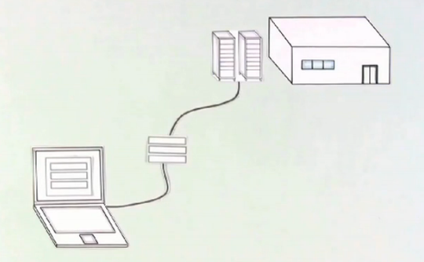

Datele mele sunt mereu sigure pe net?
Nu, nu sunt. De aceea trebuie să fim întotdeauna atenți la ce site-uri folosim.
Folosim site-uri dacă mergem la cumpărături, ne administrăm banii din bancă sau dacă vorbim cu prietenii. Pentru acest lucru, datele noastre personale ajung la sediul unei firme. Conexiunea este întotdeauna sigură? De asemenea, internetul reprezintă un spațiu fascinant, în care comunicarea, informația și divertismentul sunt beneficii pentru toți oamenii indiferent de vârstă și de cultura căreia îi aparțin.
Ce măsuri ar trebui să iau?
Hmm... Răspunde la următoarele întrebări.
| Ești atent la ceea ce postezi? Înainte de a posta pe o rețea socială, gândeștete dacă ai vrea ca la acea informație să aibă acces toată lumea. Nu uita, Internetul este un loc public! |
|
| Poți vorbi oricum cu ceilalți utilizatori? Comportă-te cu ceilalți așa cum ai vrea să se poarte și ei la rândul lor cu tine. În cazul în care cineva te deranjează, blochează și raportează persoana. |
|
| Ai antivirus? Instalează un antivirus bun și actualizează-l regulat. Astfel vei fi ferit de viruși și malware. |
|
| Citești comentariile de la site-urile firmelor? Este bine să citești comentariile utilizatorului pentru a te asigura ca site-ul respectiv este sigur. |